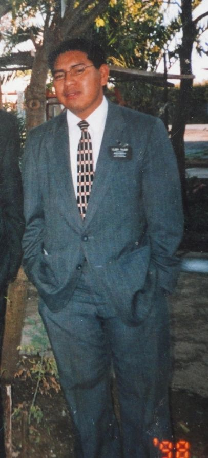
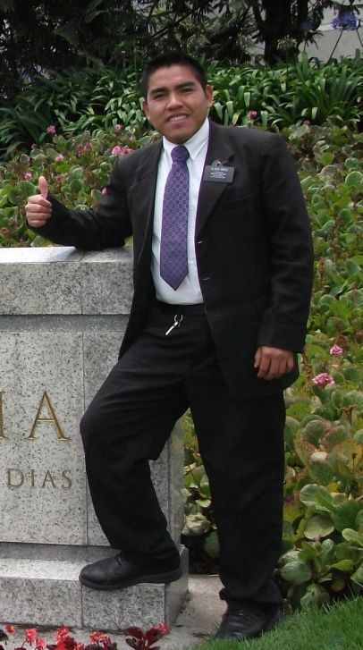
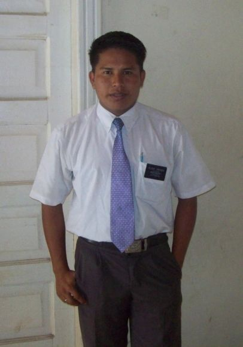
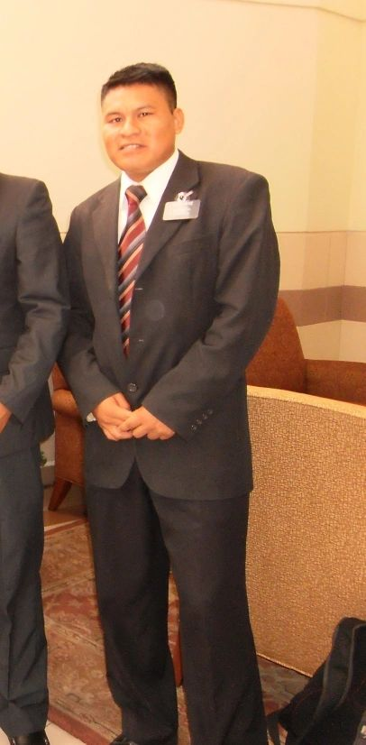
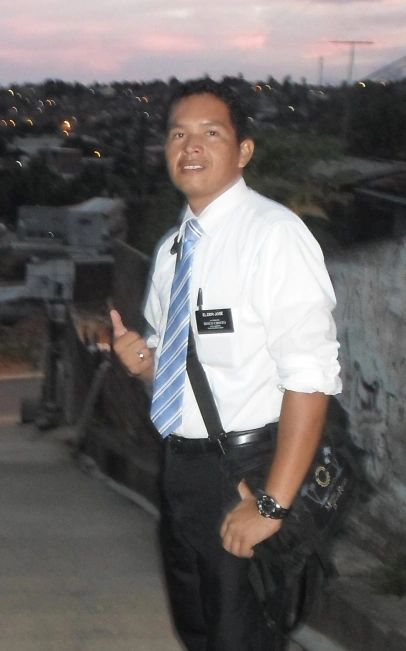
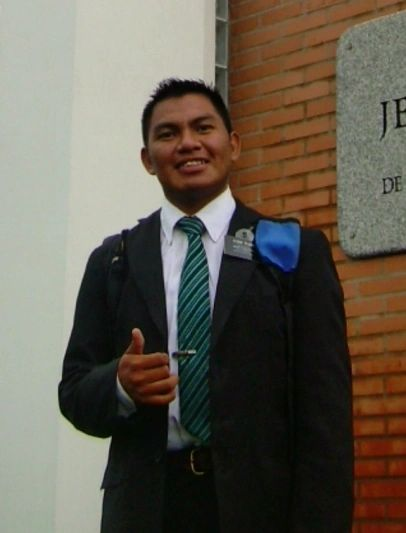

Élder Teofilo Cafiero Tomás
Misión Paraguay Asunción
1983 - 1985
Élder Julio Yegros Castillo
Misión Paraguay Asunción
1983 - 1985
Élder Americo Caballero Masterino
Misión Paraguay Asunción
1996 - 1998
Élder Crecencio López Gómez
Misión Paraguay Asunción
1999 - 2001
Élder Cardozo Villalba Ortiz
Misión Uruguay Montevideo
2001 - 2003

Élder Avelino Toledo López
Misión Argentina Rosario
2003 - 2005
Élder Gustavo López Fermín
Misión Colombia Bogotá Norte
2011 - 2011

Élder Virginio Ortiz Falcón
Misión Colombia Bogotá Norte
2011 - 2013

Élder Osvaldo Friesen Candelario
Misión Colombia Barranquilla
Misión Colombia Medellín
2011 - 2013

Élder Carlino Ortiz Yegros
Misión Ecuador Guayaquil Norte
2011 - 2013

Élder Isidoro Jose Bitterman
Missão Brasil Recife
2012 - 2014
Élder Javier Cáceres Álvarez
Misión Argentina Salta
2014 - 2016
Hermana Rumilda Giménez
Misión Argentina Salta
2014 - 2016
Élder Diego Charlo Cáceres
Misión Argentina Salta
2014 - 2016
Élder Benceslao Martínez Rodríguez
Misión Argentina Salta
2014 - 2016
Élder Armindo Arenas Ortiz
Misión Argentina Rosario
2015-2017

Élder Crispiniano Flores
Misión Argentina Rosario
2015-2017
Élder Narciso Cleto
Misión Argentina Rosario
2015-2017
Élder Arístides Caballero
Misión Argentina Rosario
2015-2017
--------------------------------------------------------------------------------------------------